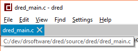

Version 0.4 Release Notes
Miscellaneous Improvements and Bug Fixes
- DPI fixes and improvements.
- (Windows) Changes to DPI scaling settings are now automatically applied to dred dynamically at run-time:

- The "ui-scale" setting is now applied immediately without the need for a restart. This setting stacks with the system DPI setting.

- Added tooltips to the tab bar showing the full path of the file when the mouse is hovered over a tab.

- Added support for running dred in portable mode in response to detecting a "portable.dred" config file in the same directory as the exe.
- Fixed a bug with autocomplete where the popup box would not be filled correctly after executing a command.
- Fixed a bug where the command bar would not be relieved of the keyboard focus when opening any kind of dialog box via a command.
- Fixed a possible crash when opening a dialog box.
- Fixed a bug where favourites do not show correctly.
- Fixed a printing bug where an excess page is printed.
Windows Only
Linux and GTK Only
Source Code Improvements
- Improved the font scaling system. The new system removes the old acquire/unacquire system for sub-fonts and replace it with a system
where each of the relevant font and text painting APIs take a scale. The handling of font scaling is now done internally by DTK rather
than by dred. The advantage to this new system is that it greatly simplifies font management.
- Improved image scaling system. The new system adds support for SVG images and introduces the notion of stock images.
- Removed dependency on dr.h
- Removed dependency on dr_ipc.h
- Added more standard controls to DTK.
- Button
- Checkbox
- Color Button (color picker)
- Scrollbar
- Tab Group and Tab Bar
- Added font picker dialog to DTK.
- Added date/time and file path APIs to DTK.
 |
 |
Copyright © 2019 David Reid
Developed by David Reid -